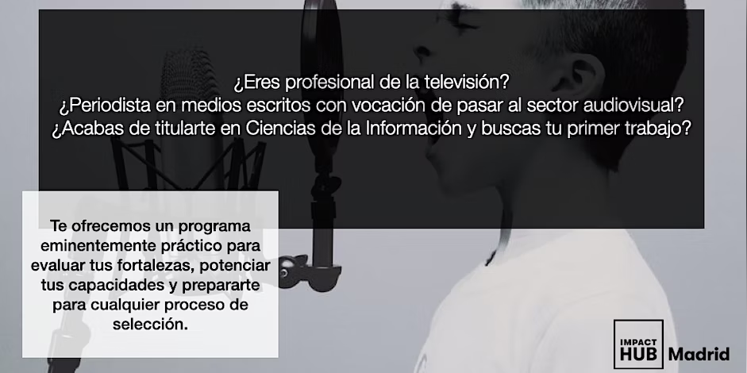

XXI CONGRESO DE PERIODISMO DEL CEEDCV
Valencia, 11 al 14 de Marzo de 2023
Palacio de Congresos
Valencia, 11 al 14 de Marzo de 2023
Palacio de Congresos
Con el reto de llevar el periodismo europero más allá de la actialidad institucional, Las jornadas parten del interés común de explorar nuevas vías de colaboración como la desarrollada por el CEEDCV y The Guardian, que desde 2019 comparten tanto contenidos, como reportajes y noticias diarias, como aprendizajes sobre el modelo de financiación por socios que tienen en común.
Formación Integral para el periodista de Televisión-Noviembre 2023
 JICUP Periodismo a distancia
JICUP Periodismo a distancia
 Sexta Jornada de Seguridad de la Información
Sexta Jornada de Seguridad de la Información
 Jornada Internacional
Jornada Internacional
 I Jornadas de Periodismo Europeo
I Jornadas de Periodismo Europeo
 XIX Jornada Nacional de Periodismo
XIX Jornada Nacional de Periodismo
Actividad realizada po Alfredo Sanchís Sánchez, para la asignatura de lenguaje de
Primer trimestre 2022/23